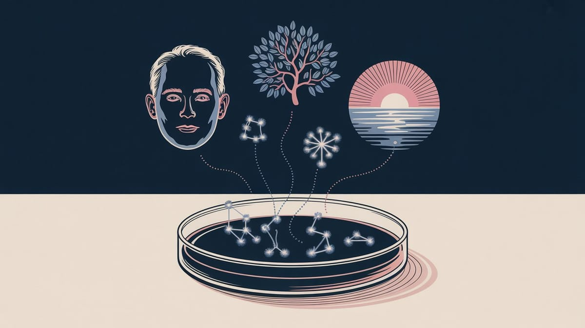

:: Now begins a story...
May I present to you, a finely curated section of a fine collection of the wonderful web we weave with a weekly roundup of bits and pieces from the far corners of the super information highway that I like to call — Token Wisdom ✨


"We're witnessing the collapse of digital privacy as we know it. Quantum computing threatens to shatter our cryptographic foundations while governments systematically dismantle anonymity online. The question isn't whether our current security will survive—it's whether we'll build something better before it's too late."
— At least that's what my encryption algorithms whispered before they started having existential crises. But who am I to argue with paranoid math? My security clearance is still pending quantum approval 😝

Editor's Notes 📆
Week 48 of 52 // November 23rd 🧿 29th, 2025
Welcome to the 136th edition! This week we delve into alarming predictions about AI's societal impact from industry pioneers, emerging threats in neurotechnology, and groundbreaking challenges to established physics. We're examining how algorithmic curation affects learning, how farming is being revolutionized by AI, and how new theories about consciousness and thermodynamics are reshaping our understanding of reality.
The convergence of artificial intelligence, neuroscience, and fundamental physics reveals a world where established paradigms are being challenged at every level.

🔮 Pearls of Wisdom, The Latest Edition...
Get smart, fast. If you're pressed for time and want to keep up to date!
Enjoy The Newest Latest, A Closer Look & Time Well Spent!

🎉 Newest / Latest
100% Authentic Humanly Chosen

AI, Consciousness, and Societal Transformation
This week's collection examines how artificial intelligence threatens societal stability, while new discoveries in consciousness and physics challenge our fundamental understanding of reality. From AI warnings to agricultural automation, we're witnessing unprecedented changes in how humans interact with technology and understand their world.
- AI "Godfather" Predicts Societal Breakdown
Geoffrey Hinton's stark warning about AI's destabilizing effects on society goes beyond typical doomsaying. He outlines specific mechanisms of social disruption, from job displacement to information manipulation, drawing on decades of firsthand experience in AI development. Read more at Futurism - Brain Weapons: A New Global Threat
Revolutionary research reveals alarming advances in neurotechnology weapons capable of manipulating human consciousness. Scientists warn of urgent need for international regulation as these developments pose unprecedented risks to global security and human autonomy. Read more at ZME Science - Stadium Experience Revolution
Breakthrough technology developed at the University of Bristol promises to transform how fans experience live events. The innovation combines AI, spatial computing, and crowd psychology to create immersive, interactive experiences that redefine stadium atmosphere. Read more at BBC News - Critical Security Flaw in Memory Encryption
Researchers discover affordable hardware module that compromises AMD and Intel's memory encryption systems. This breakthrough raises serious concerns about data security and highlights vulnerabilities in current encryption methods. Read more at Dark Reading - Algorithms Reshape Learning Patterns
Groundbreaking study reveals how personalized algorithms inadvertently create learning tunnels, leading users to false conclusions despite starting with no prior knowledge. Research shows concerning patterns in digital information consumption. Read more at Science Daily - Brain's Memory Selection Process
New research uncovers the complex molecular mechanisms behind memory formation and forgetting. Scientists identify key processes that determine which experiences become long-term memories and which fade away. Read more at SciTech Daily - AI Transforms American Farming
Traditional agricultural practices are rapidly giving way to AI-driven systems. From soil analysis to crop monitoring, artificial intelligence is revolutionizing how America's farmers manage their land and produce food. Read more at Washington Post - Einstein's Light Speed Theory Challenged
Revolutionary analysis questions fundamental aspects of special relativity, suggesting possible variations in the speed of light. This research could reshape our understanding of physics and the universe's fundamental constants. Read more at The Brighter Side - Fourth Law of Thermodynamics Proposed
Scientists propose a new law of thermodynamics specifically for living systems, addressing gaps in our understanding of biological processes and their relationship with physical laws. Read more at New Scientist - Consciousness as Reality's Foundation
Groundbreaking theoretical model positions consciousness as the fundamental basis from which time, space, and matter emerge. This revolutionary approach could bridge quantum mechanics and consciousness studies. Read more at Phys.org
👁️ A Closer Look
Unearthing gems in the digital landscape.

Because in the ever-evolving tech world, there's always more to learn and laugh about.
Intelligence Without Experience
When Neurons Know What They've Never Seen
Lab-grown neurons are exhibiting patterns for sight and sound despite never encountering these stimuli – like finding books in an untouched library. These cells spontaneously fire in organized sequences matching sensory experiences they've never had, challenging our fundamental assumptions about learning and memory. It raises profound questions: Is consciousness embedded in our neural architecture? Do our brains come pre-wired with universal patterns? The implications reshape our understanding of intelligence itself.
 🌶️ iamkhayyam
🌶️ iamkhayyam


When neurons show memories of experiences they've never had, we must ask: Is consciousness the creator of experience, or merely its witness?
A Closer Look: Explorations in Technology
Weekly essay in the areas of blockchain, artificial intelligence, extended reality, quantum computing, and all the bits and pieces.

A Closer Look: Explorations in Technology
Weekly essay in the areas of blockchain, artificial intelligence, extended reality, quantum computing, and all the bits and pieces.


📺 Time Well Spent
Top Ten of the Time I Spend

From AI Evolution to Memory Formation: Exploring Human Potential
This week's video collection examines the shifting landscape of artificial intelligence, consciousness research, and technological innovation. We journey from AI development strategies to gold standard economics, exploring how technology shapes our understanding of value and intelligence.
📺 Time Well Spent
- Ilya Sutskever: From Scaling to Research
A profound discussion with OpenAI's chief scientist about the paradigm shift in AI development strategy. Sutskever explores why we're moving beyond simple scaling to tackle fundamental research challenges in pursuit of beneficial AGI. Watch on YouTube - The Real Reason We Left the Gold Standard
Deep analysis of how capital controls affect 3 billion people in countries like China and Russia, revealing surprising truths about modern monetary systems and their impact on global economics. Watch on YouTube - Why the Wealthy Choose Singapore for Gold
Investigative report into the surge of gold storage in Singapore as prices reach $4,000. Explores how geopolitical tensions and economic uncertainty are reshaping wealth preservation strategies. Watch on YouTube - Factorio - Engineering Evolution
Fascinating look at how this game's complex automation systems mirror real-world technological progress and industrial evolution, offering insights into optimization and system design. Watch on YouTube - This Graph Will Change Your Worldview
Veritasium's compelling exploration of non-normal distributions challenges our fundamental assumptions about probability and reveals how rare events shape our world more than we realize. Watch on YouTube - The Software Patent Crisis
Critical analysis of how patent law affects software development, with urgent warnings about proposed changes that could reshape the future of coding and innovation. Watch on YouTube - The Compton Cowboys' Community
Inspiring documentary about urban horsemanship's role in community building, showing how traditional practices can transform modern urban spaces and challenge societal stereotypes. Watch on YouTube - Flash Attention: Revolution in AI
Technical deep-dive into the evolution of attention mechanisms in AI, explaining how FlashAttention-1, 2, and 3 are transforming the efficiency of large language models. Watch on YouTube - Transforming Transformer Architecture
The original inventor of the Transformer architecture discusses why it's time to move beyond current approaches, exploring new paradigms for AI development. Watch on YouTube - How to Steal 7 Million Million Dollars
Fascinating analysis of modern financial system vulnerabilities, revealing the complex interplay between technology, security, and global finance. Watch on YouTube

✨Token Wisdom
Knowledge Transmuted
In this 136th edition of Token Wisdom, we've explored the convergence of artificial intelligence, consciousness research, and fundamental physics. Our "Newest Latest" highlights how AI pioneers like Geoffrey Hinton warn of impending societal disruption while scientists grapple with emerging threats like consciousness-altering weapons.
These developments illustrate how technology is challenging our understanding at every level - from the nature of consciousness to the fundamentals of physics. From lab-grown neurons displaying unexplained intelligence to new theories questioning Einstein's special relativity, we're witnessing a period of unprecedented questioning of established scientific paradigms. The thread connecting these developments is clear: our assumptions about intelligence, consciousness, and even physical reality are being fundamentally challenged.
As we stand at this intersection of artificial and human intelligence, the question isn't just about technological advancement—it's about understanding the very nature of consciousness, experience, and reality itself.

🌈💫 The Less You Know
The More You Learn
Latest Technologies & Innovations:
- AI Impact Analysis: Societal transformation predictions
- Neurotechnology Weapons: Consciousness manipulation research
- Stadium Enhancement Tech: Fan experience innovation
- Memory Encryption: Hardware security developments
- Algorithm Learning Impact: Educational pattern analysis
- Molecular Memory: Brain storage mechanisms
- Agricultural AI: Automated farming systems
- Physics Challenges: Light speed theory revisions
- Thermodynamic Theory: Living systems analysis
- Neural Pattern Formation: Lab-grown neuron behavior
Most Important Topics:
- AI Society Impact: Potential societal breakdown
- Neuroscience Security: Weaponized consciousness threats
- Memory Formation: Neural storage mechanisms
- Algorithm Effects: Learning pattern distortion
- Agricultural Evolution: AI farming transformation
- Physics Revolution: Fundamental theory challenges
- Consciousness Theory: Reality foundation proposals
- Security Vulnerabilities: Memory encryption flaws
- Learning Patterns: Algorithm influence studies
- Neural Intelligence: Unexplained pattern formation
Acronyms:
- AGI - Artificial General Intelligence
- SSI - Scaling Science Institute
- AMD - Advanced Micro Devices
- TNL - The News Lens
- TWS - Token Wisdom Selections
- BBC - British Broadcasting Corporation
- AI - Artificial Intelligence
- CPU - Central Processing Unit
Technical Terms:
- Memory Encryption: Data protection in computer systems
- Neural Patterns: Brain activity organizations
- Algorithmic Curation: Automated content selection
- Thermodynamics: Energy transfer and transformation
- Consciousness Manipulation: Mental state alteration
- Special Relativity: Physics of space-time
- Memory Formation: Neural information storage
- Pattern Recognition: Information processing systems
- Agricultural Automation: Computerized farming
- Neural Network: Brain-inspired computing systems
Just because Jon Snow knows nothing, doesn’t mean you have to.
Embrace the pursuit of knowledge to shape a better tomorrow. Sign up for more Token Wisdom and carry the torch of foresight into the fathomless domains of innovation and beyond.
"As we unlock the mysteries of consciousness, we must question whether our tools for understanding are becoming the very thing we're trying to understand."
— Token Wisdom ✨
Until next time: stay smart, and kind, and definitely stay weird!
Become a Token Wisdom subscriber
Illuminate your inbox with the light of knowledge. ✨

Thank you for cruising by the Cult of Innovation
We’re making some Stone Soup here. If you enjoyed this amuse-bouche of news compilations in bite-sized morsels, please share it with your friends and help feed a community. Mmmm. #nomnom.